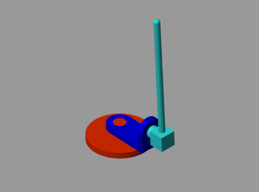
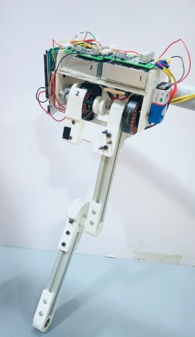

Projects
Lane Adherence and Traffic Sign Detection in Autonomous Cars
Created an vision system algorithm to detect the lanes on the road and maintain the Autonomous Vehicle within the lanes. Additionally programmed the car to detect stop signs and act accordingly.
Skills used : Computer Vision, Python

Turtlebot3 SLAM Navigation in ROS-Gazebo
Developed an algorithm to find a path and make the robot follow it to reach a virtual goal in a Gazebo environment using inbuilt packages in ROS.
Skills used : ROS, Path Planning, Mapping, Localization, Python

Rotary Inverted Pendulum
Designed a state space controller to maintain a simulated model of a Rotary Inverted Pendulum at upright position.
Skills used : CAD, MATLAB and Simulink, Controller Design and Tuning

Tendon-Driven Robot Leg
Developed a Robotic Leg Testing Rig to validate the feasibility of a BLDC backdrivable approach as an alternative method of terrain adaptability for quadruped robot limbs.
Skills used : CAD, Mathematical Modeling on MATLAB and Simulink, Arduino Coding
